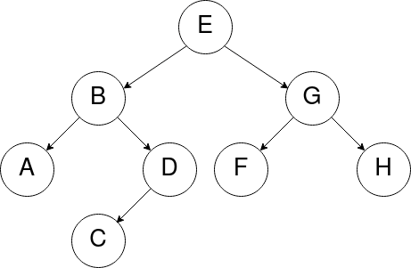
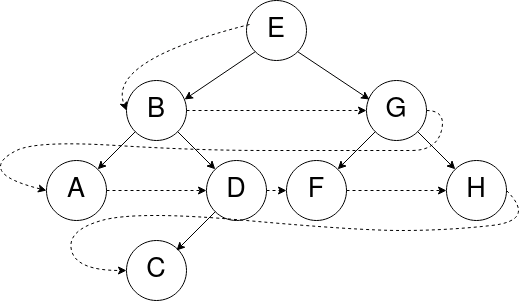
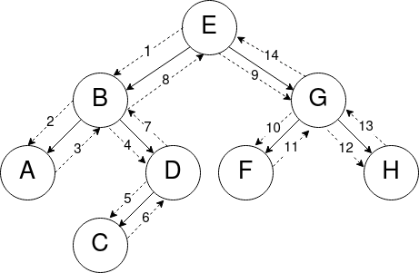

Parcours d'arbres
Un parcours d'arbre est une façon d'ordonner les noeuds d'un arbre afin de les parcourir.
Voici un arbre binaire que l'on souhaite parcourir :

Le parcours en largeur d'abord
Le parcours en largeur consiste à parcourir l'arbre niveau par niveau. Les noeuds de niveau 0 sont sont d'abord parcourus, puis les noeuds de niveau 1, et ainsi de suite.
Dans chaque niveau, les noeuds sont parcourus de gauche à droite.
Sur l'arbre ci-dessous : [E, B, G, A, D, F, H, C]

Le parcours en profondeur d'abord
Le parcours en profondeur d'un arbre est un type de parcours d'arbres qui consiste à traiter la racine de l'arbre, et à parcourir récursivement les sous-arbres gauche et droit de la racine.
Les parcours préfixe, infixe et suffixe (également appelé postfixe) se distinguent par l'ordre dans lequel sont effectués ces traitements.
Parcours préfixe - (Racine-Gauche-Droite)
Dans le parcours préfixe, la racine est traitée avant les appels récursifs sur le sous-arbre gauche, puis sur le sous-arbre droit.
En se "baladant" autour de l'arbre (ordre de visite des noeuds en pointillés), on liste chaque sommet la première fois qu’on le rencontre dans la balade.
Sur l'arbre ci-dessous : [E, B, A, D, C, G, F, H]

Parcours suffixe ou postfixe - (Gauche-Droite-Racine)
Dans le parcours suffixe (ou postfixe), la racine est traitée après les appels récursifs sur le sous-arbre gauche puis sur le sous-arbre droit.
En se "baladant" autour de l'arbre, on liste chaque sommet la dernière fois qu’on le rencontre dans la balade.
Sur l'arbre ci-dessous : [A, C, D, B, F, H, G, E]
Parcours infixe - (Gauche-Racine-Droite)
Dans le parcours infixe, le traitement de la racine est effectué entre les appels sur les sous-arbres gauche et droit.
En se "baladant" autour de l'arbre, on liste chaque sommet ayant un fils gauche la seconde fois qu’on le voit et chaque sommet sans fils gauche la première fois qu’on le voit.
Sur l'arbre ci-dessous : [A, B, C, D, E, F, G, H]